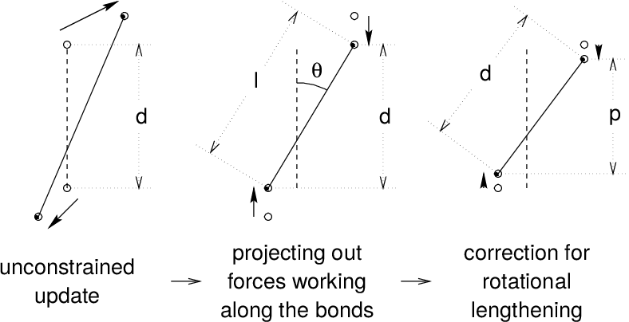

Constraint algorithms¶
Constraints can be imposed in GROMACS using LINCS (default) or the traditional SHAKE method.
SHAKE¶
The SHAKE 46 algorithm changes a set of unconstrained coordinates \(\mathbf{r}^{'}\) to a set of coordinates \(\mathbf{r}''\) that fulfill a list of distance constraints, using a set \(\mathbf{r}\) reference, as
This action is consistent with solving a set of Lagrange multipliers in the constrained equations of motion. SHAKE needs a relative tolerance; it will continue until all constraints are satisfied within that relative tolerance. An error message is given if SHAKE cannot reset the coordinates because the deviation is too large, or if a given number of iterations is surpassed.
Assume the equations of motion must fulfill \(K\) holonomic constraints, expressed as
For example, \((\mathbf{r}_1 - \mathbf{r}_2)^2 - b^2 = 0\). Then the forces are defined as
where \(\lambda_k\) are Lagrange multipliers which must be solved to fulfill the constraint equations. The second part of this sum determines the constraint forces \(\mathbf{G}_i\), defined by
The displacement due to the constraint forces in the leap-frog or Verlet algorithm is equal to \((\mathbf{G}_i/m_i)({{\Delta t}})^2\). Solving the Lagrange multipliers (and hence the displacements) requires the solution of a set of coupled equations of the second degree. These are solved iteratively by SHAKE. SETTLE
SETTLE¶
For the special case of rigid water molecules, that often make up more than 80% of the simulation system we have implemented the SETTLE algorithm 47 (sec. Constraint algorithms). The implementation of SETTLE in GROMACS is a slight modification of the original algorithm, in that it completely avoids the calculation of the center of mass of the water molecule. Apart from saving a few operations, the main gain of this is a reduction in rounding errors. For large coordinates, the floating pointing precision of constrained distances is reduced, which leads to an energy drift which usually depends quadratically on the coordinate. For SETTLE this dependence is now linear, which enables accurate integration of systems in single precision up to 1000 nm in size. But note that the drift due to SHAKE and LINCS still has a quadratic dependence, which limits the size of systems with normal constraints in single precision to 100 to 200 nm.
For velocity Verlet, an additional round of constraining must be done, to constrain the velocities of the second velocity half step, removing any component of the velocity parallel to the bond vector. This step is called RATTLE, and is covered in more detail in the original Andersen paper 48.
LINCS¶
The LINCS algorithm¶
LINCS is an algorithm that resets bonds to their correct lengths after an unconstrained update 49. The method is non-iterative, as it always uses two steps. Although LINCS is based on matrices, no matrix-matrix multiplications are needed. The method is more stable and faster than SHAKE, but it can only be used with bond constraints and isolated angle constraints, such as the proton angle in OH. Because of its stability, LINCS is especially useful for Brownian dynamics. LINCS has two parameters, which are explained in the subsection parameters. The parallel version of LINCS, P-LINCS, is described in subsection Constraints in parallel.
The LINCS formulas¶
We consider a system of \(N\) particles, with positions given by a \(3N\) vector \(\mathbf{r}(t)\). For molecular dynamics the equations of motion are given by Newton’s Law
where \(\mathbf{F}\) is the \(3N\) force vector and \({\mathbf{M}}\) is a \(3N \times 3N\) diagonal matrix, containing the masses of the particles. The system is constrained by \(K\) time-independent constraint equations
In a numerical integration scheme, LINCS is applied after an unconstrained update, just like SHAKE. The algorithm works in two steps (see figure Fig. 8). In the first step, the projections of the new bonds on the old bonds are set to zero. In the second step, a correction is applied for the lengthening of the bonds due to rotation. The numerics for the first step and the second step are very similar. A complete derivation of the algorithm can be found in 49. Only a short description of the first step is given here.


Fig. 8 The three position updates needed for one time step. The dashed line is the old bond of length \(d\), the solid lines are the new bonds. \(l=d \cos \theta\) and \(p=(2 d^2 - l^2)^{1 \over 2}\).¶
A new notation is introduced for the gradient matrix of the constraint equations which appears on the right hand side of this equation:
Notice that \({\mathbf{B}}\) is a \(K \times 3N\) matrix, it contains the directions of the constraints. The following equation shows how the new constrained coordinates \(\mathbf{r}_{n+1}\) are related to the unconstrained coordinates \(\mathbf{r}_{n+1}^{unc}\) by
where
The derivation of this equation from (104) and (105) can be found in 49.
This first step does not set the real bond lengths to the prescribed lengths, but the projection of the new bonds onto the old directions of the bonds. To correct for the rotation of bond \(i\), the projection of the bond, \(p_i\), on the old direction is set to
where \(l_i\) is the bond length after the first projection. The corrected positions are
This correction for rotational effects is actually an iterative process, but during MD only one iteration is applied. The relative constraint deviation after this procedure will be less than 0.0001 for every constraint. In energy minimization, this might not be accurate enough, so the number of iterations is equal to the order of the expansion (see below).
Half of the CPU time goes to inverting the constraint coupling matrix \({\mathbf{B}}_n {{\mathbf{M}}^{-1}}{\mathbf{B}}_n^T\), which has to be done every time step. This \(K \times K\) matrix has \(1/m_{i_1} + 1/m_{i_2}\) on the diagonal. The off-diagonal elements are only non-zero when two bonds are connected, then the element is \(\cos \phi /m_c\), where \(m_c\) is the mass of the atom connecting the two bonds and \(\phi\) is the angle between the bonds.
The matrix \(\mathbf{T}\) is inverted through a power expansion. A \(K \times K\) matrix \(\mathbf{S}\) is introduced which is the inverse square root of the diagonal of \(\mathbf{B}_n {{\mathbf{M}}^{-1}}{\mathbf{B}}_n^T\). This matrix is used to convert the diagonal elements of the coupling matrix to one:
The matrix \(\mathbf{A}_n\) is symmetric and sparse and has zeros on the diagonal. Thus a simple trick can be used to calculate the inverse:
This inversion method is only valid if the absolute values of all the eigenvalues of \(\mathbf{A}_n\) are smaller than one. In molecules with only bond constraints, the connectivity is so low that this will always be true, even if ring structures are present. Problems can arise in angle-constrained molecules. By constraining angles with additional distance constraints, multiple small ring structures are introduced. This gives a high connectivity, leading to large eigenvalues. Therefore LINCS should NOT be used with coupled angle-constraints.
For molecules with all bonds constrained the eigenvalues of \(A\) are around 0.4. This means that with each additional order in the expansion (112) the deviations decrease by a factor 0.4. But for relatively isolated triangles of constraints the largest eigenvalue is around 0.7. Such triangles can occur when removing hydrogen angle vibrations with an additional angle constraint in alcohol groups or when constraining water molecules with LINCS, for instance with flexible constraints. The constraints in such triangles converge twice as slow as the other constraints. Therefore, starting with GROMACS 4, additional terms are added to the expansion for such triangles
where \(N_i\) is the normal order of the expansion and \(\mathbf{A}^*\) only contains the elements of \(\mathbf{A}\) that couple constraints within rigid triangles, all other elements are zero. In this manner, the accuracy of angle constraints comes close to that of the other constraints, while the series of matrix vector multiplications required for determining the expansion only needs to be extended for a few constraint couplings. This procedure is described in the P-LINCS paper 50.
The LINCS Parameters¶
The accuracy of LINCS depends on the number of matrices used in the expansion (112). For MD calculations a fourth order expansion is enough. For Brownian dynamics with large time steps an eighth order expansion may be necessary. The order is a parameter in the mdp file. The implementation of LINCS is done in such a way that the algorithm will never crash. Even when it is impossible to to reset the constraints LINCS will generate a conformation which fulfills the constraints as well as possible. However, LINCS will generate a warning when in one step a bond rotates over more than a predefined angle. This angle is set by the user in the mdp file.